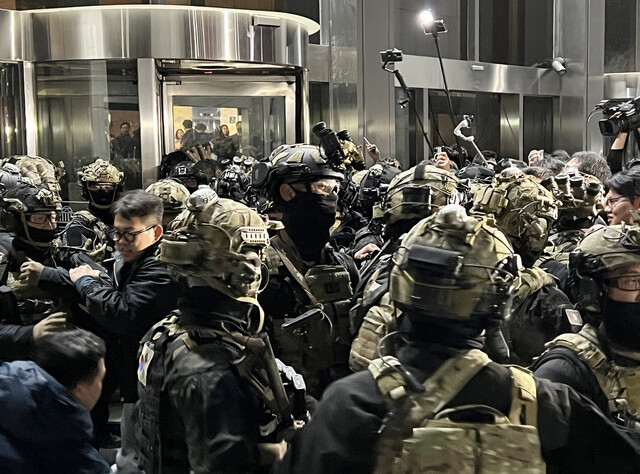

중앙선거관리위원회 과천 청사의 사이버보안을 담당하는 이준일씨(가명)는 지난해 12월3일 오후 6시쯤 청사에 들어설 때까지만 해도 여느 날과 같은 지루한 당직근무가 될 거라고 생각했다. 통합관제실에서 일하던 이씨는 밤까지 뉴스를 못 봐 비상계엄이 선포된지도 몰랐다. 그에게 계엄 사실을 알려준 것은 오후 10시40분 관제실 문을 두드린 계엄군들이었다.

“계엄령이 선포됐습니다. 여기가 서버실이 맞습니까?”
이씨가 “서버실은 밖에 있다”고 말하자 소령 계급장을 달고 있던 계엄군 3명은 이씨에게 “서버실로 안내하라”고 했다. 그들은 잠긴 서버실 문도 열라고 했다. 말투가 거칠지는 않았지만 이씨는 계엄군 허리에 달린 권총이 신경쓰였다. 상황이 잘못됐다는 걸 직감한 이씨는 “상부에 보고해야겠다”며 계엄군의 소속을 물었다. 그들은 “이미 보고 끝났으니까 신경 쓰지 않아도 된다”고 말했다. 이씨가 서버실 문을 열어주자 한 명이 무전을 했다. “치익. 서버실 장악 완료했습니다.”My first paragraph.
My first paragraph.